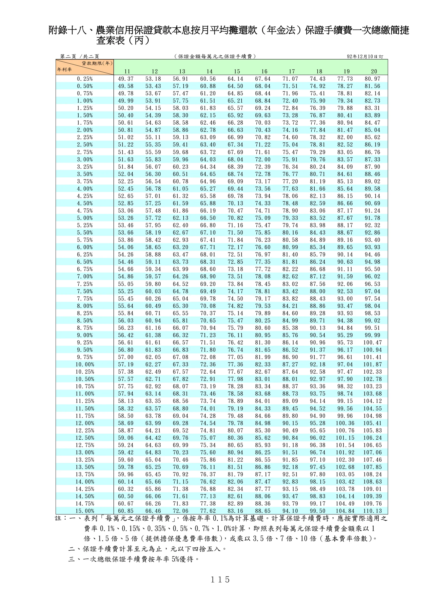

附錄十八、農業信用保證手續費一次總繳簡捷查索表
手冊頁：115 PDF頁：125／203

查看PDF文字層
下列文字取自PDF既有文字層，僅供搜尋、複製與無障礙輔助。複雜表格的欄列位置可能失真，正式內容請以原頁預覽或PDF為準。
附錄十八、農業信用保證貸款本息按月平均攤還款（年金法）保證手續費一次總繳簡捷 查索表（丙） 註：一、表列「每萬元之保證手續費」 ，係按年率0.1%為計算基礎。計算保證手續費時，應按實際適用之 費率 0.1%、0.15%、0.35%、0.5%、0.7%、1.0%計算，即照表列每萬元保證手續費金額乘以 1 倍、1.5 倍、5倍（提供擔保優惠費率倍數） ，或乘以3.5 倍、7 倍、10 倍（基本費率倍數） 。 二、保證手續費計算至元為止，元以下四捨五入。 三、一次總繳保證手續費按年率 5%優待。 第二頁 /共二頁 （保證金額每萬元之保證手續費） 92年12月10日訂 11 12 13 14 15 16 17 18 19 20 0.25% 49.37 53.18 56.91 60.56 64.14 67.64 71.07 74.43 77.73 80.97 0.50% 49.58 53.43 57.19 60.88 64.50 68.04 71.51 74.92 78.27 81.56 0.75% 49.78 53.67 57.47 61.20 64.85 68.44 71.96 75.41 78.81 82.14 1.00% 49.99 53.91 57.75 61.51 65.21 68.84 72.40 75.90 79.34 82.73 1.25% 50.20 54.15 58.03 61.83 65.57 69.24 72.84 76.39 79.88 83.31 1.50% 50.40 54.39 58.30 62.15 65.92 69.63 73.28 76.87 80.41 83.89 1.75% 50.61 54.63 58.58 62.46 66.28 70.03 73.72 77.36 80.94 84.47 2.00% 50.81 54.87 58.86 62.78 66.63 70.43 74.16 77.84 81.47 85.04 2.25% 51.02 55.11 59.13 63.09 66.99 70.82 74.60 78.32 82.00 85.62 2.50% 51.22 55.35 59.41 63.40 67.34 71.22 75.04 78.81 82.52 86.19 2.75% 51.43 55.59 59.68 63.72 67.69 71.61 75.47 79.29 83.05 86.76 3.00% 51.63 55.83 59.96 64.03 68.04 72.00 75.91 79.76 83.57 87.33 3.25% 51.84 56.07 60.23 64.34 68.39 72.39 76.34 80.24 84.09 87.90 3.50% 52.04 56.30 60.51 64.65 68.74 72.78 76.77 80.71 84.61 88.46 3.75% 52.25 56.54 60.78 64.96 69.09 73.17 77.20 81.19 85.13 89.02 4.00% 52.45 56.78 61.05 65.27 69.44 73.56 77.63 81.66 85.64 89.58 4.25% 52.65 57.01 61.32 65.58 69.78 73.94 78.06 82.13 86.15 90.14 4.50% 52.85 57.25 61.59 65.88 70.13 74.33 78.48 82.59 86.66 90.69 4.75% 53.06 57.48 61.86 66.19 70.47 74.71 78.90 83.06 87.17 91.24 5.00% 53.26 57.72 62.13 66.50 70.82 75.09 79.33 83.52 87.67 91.78 5.25% 53.46 57.95 62.40 66.80 71.16 75.47 79.74 83.98 88.17 92.32 5.50% 53.66 58.19 62.67 67.10 71.50 75.85 80.16 84.43 88.67 92.86 5.75% 53.86 58.42 62.93 67.41 71.84 76.23 80.58 84.89 89.16 93.40 6.00% 54.06 58.65 63.20 67.71 72.17 76.60 80.99 85.34 89.65 93.93 6.25% 54.26 58.88 63.47 68.01 72.51 76.97 81.40 85.79 90.14 94.46 6.50% 54.46 59.11 63.73 68.31 72.85 77.35 81.81 86.24 90.63 94.98 6.75% 54.66 59.34 63.99 68.60 73.18 77.72 82.22 86.68 91.11 95.50 7.00% 54.86 59.57 64.26 68.90 73.51 78.08 82.62 87.12 91.59 96.02 7.25% 55.05 59.80 64.52 69.20 73.84 78.45 83.02 87.56 92.06 96.53 7.50% 55.25 60.03 64.78 69.49 74.17 78.81 83.42 88.00 92.53 97.04 7.75% 55.45 60.26 65.04 69.78 74.50 79.17 83.82 88.43 93.00 97.54 8.00% 55.64 60.49 65.30 70.08 74.82 79.53 84.21 88.86 93.47 98.04 8.25% 55.84 60.71 65.55 70.37 75.14 79.89 84.60 89.28 93.93 98.53 8.50% 56.03 60.94 65.81 70.65 75.47 80.25 84.99 89.71 94.38 99.02 8.75% 56.23 61.16 66.07 70.94 75.79 80.60 85.38 90.13 94.84 99.51 9.00% 56.42 61.38 66.32 71.23 76.11 80.95 85.76 90.54 95.29 99.99 9.25% 56.61 61.61 66.57 71.51 76.42 81.30 86.14 90.96 95.73 100.47 9.50% 56.80 61.83 66.83 71.80 76.74 81.65 86.52 91.37 96.17 100.94 9.75% 57.00 62.05 67.08 72.08 77.05 81.99 86.90 91.77 96.61 101.41 10.00% 57.19 62.27 67.33 72.36 77.36 82.33 87.27 92.18 97.04 101.87 10.25% 57.38 62.49 67.57 72.64 77.67 82.67 87.64 92.58 97.47 102.33 10.50% 57.57 62.71 67.82 72.91 77.98 83.01 88.01 92.97 97.90 102.78 10.75% 57.75 62.92 68.07 73.19 78.28 83.34 88.37 93.36 98.32 103.23 11.00% 57.94 63.14 68.31 73.46 78.58 83.68 88.73 93.75 98.74 103.68 11.25% 58.13 63.35 68.56 73.74 78.89 84.01 89.09 94.14 99.15 104.12 11.50% 58.32 63.57 68.80 74.01 79.19 84.33 89.45 94.52 99.56 104.55 11.75% 58.50 63.78 69.04 74.28 79.48 84.66 89.80 94.90 99.96 104.98 12.00% 58.69 63.99 69.28 74.54 79.78 84.98 90.15 95.28 100.36 105.41 12.25% 58.87 64.21 69.52 74.81 80.07 85.30 90.49 95.65 100.76 105.83 12.50% 59.06 64.42 69.76 75.07 80.36 85.62 90.84 96.02 101.15 106.24 12.75% 59.24 64.63 69.99 75.34 80.65 85.93 91.18 96.38 101.54 106.65 13.00% 59.42 64.83 70.23 75.60 80.94 86.25 91.51 96.74 101.92 107.06 13.25% 59.60 65.04 70.46 75.86 81.22 86.55 91.85 97.10 102.30 107.46 13.50% 59.78 65.25 70.69 76.11 81.51 86.86 92.18 97.45 102.68 107.85 13.75% 59.96 65.45 70.92 76.37 81.79 87.17 92.51 97.80 103.05 108.24 14.00% 60.14 65.66 71.15 76.62 82.06 87.47 92.83 98.15 103.42 108.63 14.25% 60.32 65.86 71.38 76.88 82.34 87.77 93.15 98.49 103.78 109.01 14.50% 60.50 66.06 71.61 77.13 82.61 88.06 93.47 98.83 104.14 109.39 14.75% 60.67 66.26 71.83 77.38 82.89 88.36 93.79 99.17 104.49 109.76 15.00% 60.85 66.46 72.06 77.62 83.16 88.65 94.10 99.50 104.84 110.13 貸款期限(年) 年利率